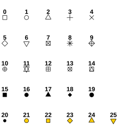
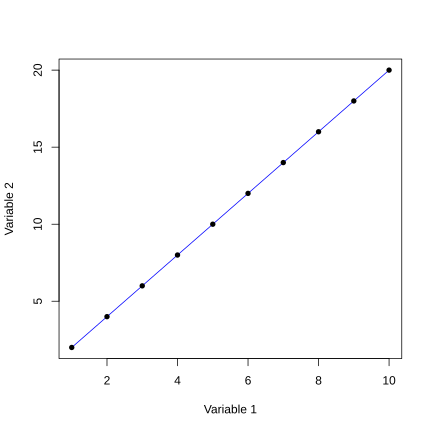

![]()
#This line of code is a comment and will be ignored by R when running the codeTutorial 1: Getting to know R and RStudio
About this tutorial
Welcome to this tutorial on getting to know R (and RStudio)!
In this tutorial, our goal is to provide you with an introduction to R and RStudio. By the end of this tutorial, you should be able to open RStudio and understand its interface, write simple R scripts, execute code in the RStudio R console, create R objects, extract values from R objects, perform basic calculations, and create a simple graph using base R.
This tutorial will help you master some fundamental skills that you will use repeatedly throughout this course!
What are R and RStudio?
What is R?
R is a programming language used for data exploration, visualization, and analysis. It is a very popular data science language in academia, but also in industry. It is free and open-source. Be aware that R is not the only programming language for data science. You may also have heard of Python, SQL, Java, Julia, C/C++, etc. In this course, however, we will only focus on R.
What is RStudio?
RStudio is an integrated development environment (IDE) for R (and other languages such as Python) developed by Posit, an open-source data science company. With RStudio, you can easily write your own scripts, run R code, manage your workspace, install and load R packages, view graphical output, and much more! You can download RStudio on the Posit website.
When you work in RStudio, you are still using R!
RStudio is an integrated development environment that makes working with R easier and more user-friendly. All the code you write and run in RStudio is R code, executed by the R engine in the background.
The RStudio interface
When you open RStudio, you should see four main panels (Figure 1):
- Script (top-left): this is where you write and edit R code. If you do not see the script panel, click File → New File → R Script (
.Rfile). - Console (bottom-left): this is where R code is executed.
- Environment and History (top-right): this is where you can see all the R objects that have been created (Environment tab), as well as all the R code that has already been executed (History tab).
- Output (bottom-right): this is where you can explore and manage files (Files tab), view plots (Plots tab), install, update, and (un)load R packages (Package tab), and access package documentation and vignettes (Help tab).

The RStudio menu
The main RStudio menu provides access to the most important functions for working with R projects and scripts. The File menu is used to create, open, and save scripts, projects, and data files, while Edit contains tools for editing code. The Code menu helps you write, format, and execute R code, and the Plots, Session, and Help menus allow you to manage outputs, control your R session, and access documentation and help resources. In Figure 2, you can see a description of some of the most commonly used icons.

The source pane
The source pane is where you view and edit files that contain R code (Figure 3). In this course, you will mainly work with two types of files: plain text files (with a .txt extension) and R script files (with a .R extension). You will also encounter Quarto files (with a .qmd extension), which are a powerful way to create well-documented and reproducible data analysis workflows. Quarto is a publishing system that allows you to combine code, text, and figures in a single document and render them into outputs such as HTML, PDF, or Word files. In fact, this entire website was created using Quarto.

The console pane
The console pane is where you run R code (Figure 4). To do this, you can send the code written in the source pane to the console pane using the “Run” command to execute the current line or selected code, or use the shortcut Ctrl + Enter (Windows) or Cmd + Enter (macOS).

The environment pane
The environment pane consists of several tabs (Figure 5). We will only focus on the two first tabs for now: Environment and History.
The Environment tab shows the R objects that currently exist in your session, such as data frames, vectors, and functions, and provides basic information about them (for example, their size or type). From this tab, you can also easily import datasets into R using Import Dataset, as well as load or save an entire workspace.
The History tab displays a record of the commands that have been executed in the console. You can select any of these commands and send them back to your script in the source pane or to the console to run them again, using the To Source and To Console buttons, respectively.

The output pane
The output pane also consists of several tabs, of which Files, Plots, Packages, and Help are used very often (Figure 6).
The Files tab allows you to browse, open, rename, and manage files and folders.
The Plots tab displays any figures generated by your R code and provides tools to navigate between plots or export them.
The Packages tab shows which R packages are installed and which are currently loaded, and lets you load or unload packages with a click.
The Help tab displays documentation for R functions and packages, including usage, arguments, and examples, and is especially useful when learning new functions.

Commenting
You can add comments to your R script using the hash tag symbol: #
Every line that starts with # will be ignored by R and will not be executed.
Always comment your R script!
We strongly advise you to add comments to your R code. At the very least, these comments should indicate why you have written each section of your code. It can also be useful to add information about the what and how. These comments can save a lot of time if you need to go back over your code after a while or, even more difficult, if someone else needs to go through your code and understand what you’ve done.
Arithmetic operators
Arithmetic operators are used to perform calculations in R. The five main arithmetic operators are summarized in Table 1. These operators work on single values as well as on vectors.
| Operator | Description |
|---|---|
| + | Addition |
| - | Subtraction |
| * | Multiplication |
| / | Division |
| ^ | Exponential |
Relational operators
Relational operators are used to compare values. They return logical values: TRUE or FALSE. The main relational operators are summarized in Table 2. These operators are fundamental for filtering data or writing conditions to use in R programs.
| Operator | Description |
|---|---|
| > | Greater than |
| < | Lower than |
| >= | Greater than or equal to |
| <= | Lower than or equal to |
| == | Equal to |
| != | Not equal to |
Logical operators
Logical operators are particularly useful when you need to define conditions to filter your data, for example. This happens very frequently when working with data. The main logical operators are summarized in Table 3.
| Operator | Description |
|---|---|
| & | AND |
| | | OR |
| ! | NOT |
Exercise 1
Do the following calculations in your R console:
- Multiply 5 by 3
- Add 10 to the result of step 1
- Raise the result of step 2 to the power 3
- Check if the result of step 3 is lower or equal to 16000 (use a relational operator to do this)
- Check if the result of step 3 is equal to 15625 (use a relational operator to do this)
Show me the code
#Step 1
5*3
#Step 2
(5*3)+10
#Step 3
((5*3)+10)^3
#Step 4
((5*3)+10)^3 <= 16000
#Step 5
((5*3)+10)^3 == 15625Creating R objects
New R objects are created using the assigment operator: <-
Press Alt + minus (Windows) or Option + minus (macOS) to quickly write the assignment operator.
You can think of this assignment operator as an arrow that puts what’s on its right side into an R object located on its left side.
Two important things to keep in mind when naming R objects
- R is case-sensitive! If R returns an error, check for typos!
- Do not use spaces in object names.
Exercise 2
Create an object called x that contains the value 2. Then, multiply it by 10.
Show me the code
#Create object
x <- 2
#Show content of R object
x
#Multiply x by 10
x*10Scalars
A scalar is a quantity that can only hold one value at a time. Here are the most common types of scalars in R:
- Numeric: numbers with a decimal value (e.g., 17.8)
- Integer: numbers without a decimal value (e.g., 18)
- Character: a letter or a combination of letters. Character strings must be enclosed by quotes in your R code.
- Factor: data type used in statistical modelling to specify what are the factors in the model (categorical variables with a defined set of categories, called ‘levels’ in R)
- Logical: a logical variable can be either
TRUEorFALSE
You can check the data type of an R object using the class() function.
Exercise 3
Check the data type of the R object (x) you created in Exercise 2.
Show me the code
class(x)Vectors
A vector is a sequence of data elements of the same type. Vectors can be created using the c() function. The letter “c” stands for “concatenate”. When using this function, each element of your vector must be separated by a comma. More generally, this is a standard rule in R: arguments passed to a function are always separated by commas. The general syntax of an R function call is:
function(argument1 = value1, argument2 = value2, argument3 = value3)
When should I (not) use quotation marks when writing R code?
In R, text must be placed between quotation marks when it is meant to be treated as a character string, such as labels, titles, file names, or values of character variables (for example "control" or "treatment"). Quotation marks tell R to interpret the text literally rather than as the name of an object.
By contrast, you should not use quotation marks when referring to existing objects, functions, or variables in your workspace, such as plot, data, or x, because R will then look for those objects and use their values.
Exercise 4
- Create a numeric vector called
x1that contains all integer values from 1 to 5. - Create a character vector called
x2containing the strings “control” and “treatment”. - Check how many elements are in
x1andx2. You can check how many elements there are in a vector using thelength()function. - Multiply
x1by 10 and look at the results. What do you notice?
Show me the code
#Numeric vector (x1)
x1 <- c(1, 2, 3, 4, 5)
#Note: this is another option to create x1
x1 <- c(1:5)
#Character vector (x2)
x2 <- c("control", "treatment")
#Check the number of elements in x1 and x2
length(x1)
length(x2)
#Multiply x1 by 10
#All elements in x1 have been multiplied by 10 (vectorized operation)
x1*10Matrices
A matrix is an ensemble of data elements of the same type arranged in a 2D layout (i.e., like a table). Matrices can be created using the matrix() function.
You can check the size of a matrix using the dim() function. The first element of the output is the number of rows. The second element of the output is the number of columns. You can also extract the number of rows and columns using nrow() and ncol(), respectively.
Exercise 5
- Create a matrix called
x3that contains all integer values from 1 to 30 arranged in a 5 by 6 layout (5 rows and 6 columns). See the help page for thematrix()function in the help pane to find out which arguments must be provided to perform this operation. You can easily do this by running?matrixin your R console. - Check the size of
x3usingdim(),ncol(), andnrow().
Show me the code
#Create matrix
x3 <- matrix(1:30,
ncol = 6,
nrow = 5)
#View matrix
x3
#Check the size of x3
dim(x3)
ncol(x3)
nrow(x3)Data frames
A data frame is an ensemble of data elements arranged in a 2D layout (i.e., like a table). Different columns of a data frame can contain different types of data (character, logical, numeric, etc.). It is probably the most common data structure used when analysing ecological data. Data frames can be created using the data.frame() function. The functions dim(), ncol(), and nrow() can also be used on data frames.
Note that in this course, we will be working with data stored in tidy data frames.
What’s make a dataset tidy?
A tidy dataset follows these three rules:
- Each variable is a column and each column is a variable
- Each observation is a row and each row is an observation
- Each value is a cell and each cell is a single value
Exercise 6
Create a data frame with three variables:
Var1 (all integer values from 1 to 10)
Var2 (values in Var1 multiplied by 2)
Var3 (5 times “control” and 5 times “treatment”)
Check the help page of the data.frame() function to figure out how to use it (?data.frame).
Note: when you have to repeat an element multiple times in a vector, you can use the function rep() to shorten your code. See example in the solution below.
Show me the code
#Create data frame
x4 <- data.frame(
Var1 = c(1:10),
Var2 = 2*c(1:10),
Var3 = c("control","control","control","control","control",
"treatment","treatment","treatment","treatment","treatment"))
#This does exactly the same, but is shorter to write
x4 <- data.frame(
Var1 = c(1:10),
Var2 = 2*c(1:10),
Var3 = c(rep("control", 5),
rep("treatment", 5)))
#View data frame
x4 Var1 Var2 Var3
1 1 2 control
2 2 4 control
3 3 6 control
4 4 8 control
5 5 10 control
6 6 12 treatment
7 7 14 treatment
8 8 16 treatment
9 9 18 treatment
10 10 20 treatmentLists
A list is a vector containing other objects (vectors, matrices, data frames, other lists, etc.). It can contain elements of various data types. Lists can be created using the list() function. The length() function can be used to check how many data elements there are in a list.
Exercise 7
- Create a list (
x5) containing the objectsx1,x2,x3andx4created earlier. - Check how many elements are in this list using
length().
Show me the code
#Create list
x5 <- list(x1, x2, x3, x4)
#View list
x5
#Check the number of elements in the list
length(x5)Indexing
One of the main advantages of R is that it is very easy to extract any given value from a data set. This is called indexing. Let’s have a look at a few examples.
Indexing works differently in R and Python
R starts counting at 1 rather than 0. For example, the first element of an object is accessed with index 1. This differs from Python, which starts counting at zero.
Vectors
To extract the ith value of a vector object called x, you should write x[i].
Exercise 8
Extract the third value of the x1 object (numeric vector) created in Exercise 4.
Show me the code
#Extract the third value of the x1 object
#x1 is a vector
x1[3]Matrices and data frames
To extract the value located at the intersection between the ith row and jth column of a matrix or a data frame object called x, you should write x[i,j].
Exercise 9
Extract the value at the intersection of row 2 and column 3 in the x3 object (matrix) created in Exercise 5.
Show me the code
#Extract the value at the intersection of row 2 and column 3 in the x3 object
#x3 is a matrix
x3[2, 3]With a data frame, there are a couple of other options to extract data from specific columns. One option is to use the dollar symbol ($) followed by the column name. Another option to extract all the values from a specific column is to use square brakets ([]) after the object name (as in Exercise 9) and simply leave the square brackets empty before the comma. It is important to specify the name of the column (in quotes), otherwise you will simply extract all the values from your data frame.
Exercise 10
Extract all the values stored in the second column (Var2) of the x4 object (data frame) created in Exercise 6. Use both options explained above.
Show me the code
#Extract all the values stored in the second column of the x4 object
#x4 is a data frame
#Option 1
x4$Var2
#Option 2
x4[, "Var2"]If you want to subset a matrix or a data frame called x (i.e., selecting only specifics rows and columns), you should write:
x[rows to select, columns to select]
Exercise 11
Extract only the values located between rows 2 and 4 in the second column of the x4 object (data frame) created in Exercise 6. Note that writing 2:4 means “from index 2 to index 4”. It is exactly the same as writing c(2,3,4).
Show me the code
#Extract only the values located between rows 2 and 4
#in the second column of the x4 object
#x4 is a data frame
x4[2:4, 2]Lists
To extract the ith element of a list object called x, you should write x[[i]].
Exercise 12
Extract the second element of the x5 object (list) created in Exercise 7.
Show me the code
#Extract the second element of the x5 object
#x5 is a list
x5[[2]]Create your first R plot
In base R, you can create your first plot using built-in functions that are available as soon as R starts, without installing any additional packages.
The most commonly used function is plot(), which can produce scatter plots. You can then improve your plot by choosing the type of plot (type argument) or adding axis labels (xlab and ylab arguments), a title (main argument), and colors (col argument). You can also add new elements to your plots with functions like points(), lines(), and abline().
These base R plotting functions are a simple and effective way to explore data and understand the relationship between variables before moving on to more advanced graphics systems such as the ggplot2 R package (which will be used later in this course).
Before moving on to an exercise, take a moment to consult the help page for the plot() function and read through the descriptions of the arguments you can use to create and customize your plot. At this stage, it is also useful to explore the graphical parameters that control the appearance of plots more generally. You can view these by running ?par in your R console.
Some arguments controlling graphical parameters are used very often, such as pch to choose the symbol used to represent points in a plot, cex to control the size of plotting elements, lty to specify the line type (solid, dashed, dotted, etc.), or lwd to set the line width.
There are many ways to personalize your plot to make it clear, informative, and visually appealing. Don’t hesitate to explore the available options and experiment with different settings to see how they affect the result.
Exercise 13: Let’s create your first plot in R!
Use the plot() function to create a scatter plot displaying the relationship between Var1 (X variable) and Var2 (Y variable) stored in the x4 object (data frame) created in Exercise 6. Create a plot with the following characteristics:
Create a line graph using the
typeargumentName the horizontal (X) axis “Variable 1” (
xlabargument)Name the vertical (Y) axis “Variable 2” (
ylabargument)Set the color of the line to blue (
colargument). Check R charts for an overview of colors available in R.Use
points()to add individual points to display the original data. Use thepchargument to select a point shape (see options below).

Show me the code
plot(x = x4$Var1,
y = x4$Var2,
type = "l",
xlab = "Variable 1",
ylab = "Variable 2",
col = "blue")
points(x = x4$Var1,
y = x4$Var2,
pch = 16)